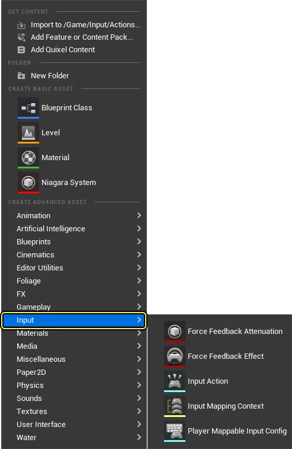
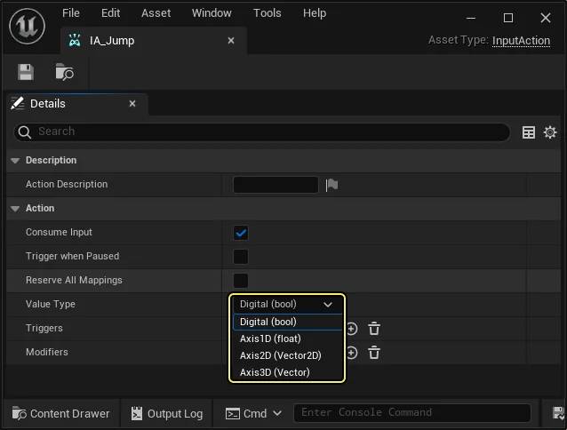
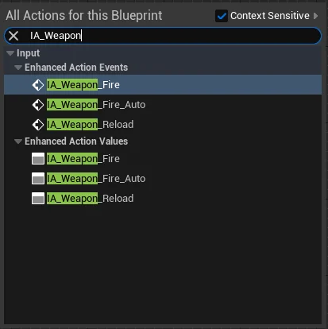
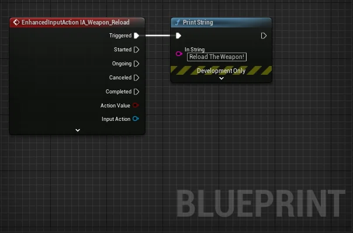
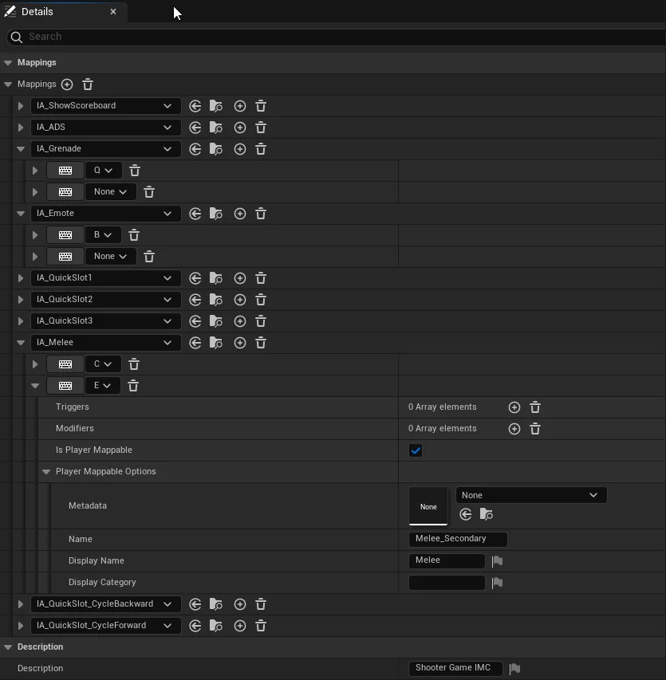
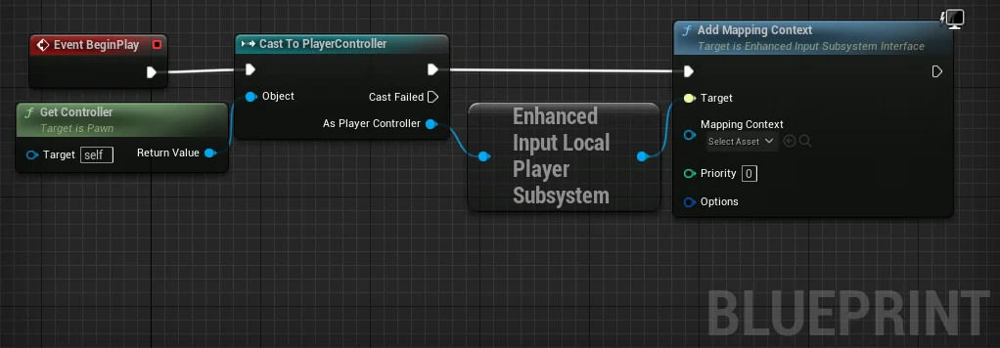
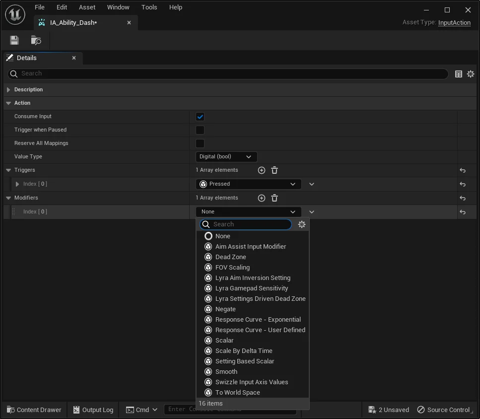
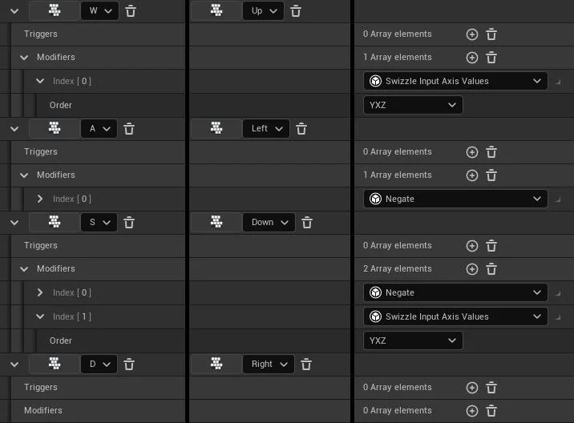

The UE5 input system. Enhanced Input replaces UE4’s Action/Axis mappings with a data-asset-based approach: you create Input Action assets that define what the player can do, and Input Mapping Context assets that define which keys trigger which actions. Mapping Contexts can be added and removed at runtime, making it easy to swap input schemes based on player state (walking vs. driving vs. swimming).
Use When
- You need to bind keys to player actions (movement, jumping, firing, swapping characters)
- You want to change which inputs are active at runtime (enter a vehicle → swap to vehicle controls)
- You need dead zones, hold timers, or other input processing without writing it yourself
- You’re setting up input for Tutorial 6’s character-swapping pattern
How It Works
Enhanced Input is enabled by default in UE5. Create input assets from the Content Browser: Add (+) → Input.

Three asset types live here: Input Action, Input Mapping Context, and Player Mappable Input Config. The first two are the ones you’ll use constantly.
Input Actions
An Input Action represents something the player can do — “Jump,” “Move,” “Swap to Character 1.” Each is a separate data asset. Name them with an IA_ prefix by convention (e.g., IA_Jump, IA_SwapChar1).
Open an Input Action to set its Value Type:

| Value Type | Data Type | Use For |
|---|---|---|
| Digital (bool) | bool | On/off actions: jump, fire, interact, swap character |
| Axis1D (float) | float | Single-axis values: throttle, zoom |
| Axis2D (Vector2D) | FVector2D | Directional input: WASD movement, gamepad stick |
| Axis3D (Vector) | FVector | Complex input: motion controllers |
Digital (bool) is the equivalent of UE4’s Action mappings. Axis2D is what you use for movement to capture both direction and magnitude from a stick or WASD keys.
Trigger States
When an Input Action fires, it passes through states that describe where it is in its lifecycle:
- Started — input began (first press)
- Ongoing — still being processed (holding a button before a hold threshold is reached)
- Triggered — conditions fully met (the main one you bind to)
- Completed — evaluation finished
- Canceled — input released before conditions were met (e.g., let go before a hold timer completes)
Most of the time, bind to Triggered.
Adding Input Listeners in Blueprint
Right-click in the Event Graph and search for the Input Action’s name. Two categories appear: Enhanced Action Events (fire execution pins per trigger state) and Enhanced Action Values (return the current value without exec pins).

Select the Event version. The node exposes exec pins for each trigger state, plus Action Value (the current value based on the Action’s type) and Input Action (a reference to the asset):

Wire the Triggered pin to your logic. For a simple test, connect it to Print String.
Input Mapping Contexts
An Input Mapping Context maps physical inputs (keys, buttons, sticks) to Input Actions. It’s where you say “the Spacebar triggers IA_Jump” or “the 1 key triggers IA_SwapChar1.”
The structure is a hierarchy:
- Top level: list of Input Actions
- Under each Action: one or more physical key/button bindings
- Under each binding: optional Input Triggers and Input Modifiers

Each binding can have its own Triggers (hold, tap, chorded) and Modifiers (negate, swizzle, dead zone) that process the raw input before it reaches the Action.
Adding a Mapping Context at Runtime
A Mapping Context does nothing until it’s added to the player’s Enhanced Input Local Player Subsystem. In Blueprint, do this at Event BeginPlay:
- Get Controller (self) → Cast To PlayerController
- From the cast result, get the Enhanced Input Local Player Subsystem
- Call Add Mapping Context, passing the context asset and a Priority (higher priority wins if two contexts bind the same key)

To swap contexts (e.g., entering a vehicle), call Remove Mapping Context on the old one and Add Mapping Context on the new one.
Input Modifiers
Modifiers are pre-processors that alter raw input values before they reach Input Triggers. They’re set per-binding inside the Input Mapping Context.

Common built-in modifiers:
| Modifier | What It Does |
|---|---|
| Negate | Inverts the value (makes a key register as negative) |
| Swizzle Input Axis Values | Reorders axes (e.g., X→Y so a key maps to the Y-axis) |
| Dead Zone | Ignores input below a threshold (gamepad stick drift) |
| Scalar | Multiplies the value by a constant |
| Smooth | Smooths input over multiple frames |
| Scale By Delta Time | Frame-rate-independent scaling |
WASD Example
To map four keys to a single 2D movement Action, use Negate and Swizzle to convert each key’s 1D positive value into the correct axis and direction:
| Key | Desired Direction | Modifiers Needed |
|---|---|---|
| W / Up | Positive Y | Swizzle (YXZ) |
| A / Left | Negative X | Negate |
| S / Down | Negative Y | Negate + Swizzle (YXZ) |
| D / Right | Positive X | (none) |

Input Triggers
Triggers determine when an input activates its Action. Without explicit triggers, any non-zero input fires on every tick. Add triggers to require specific input patterns:
Common built-in triggers:
| Trigger | Behavior |
|---|---|
| Pressed | Fires once when the key goes down |
| Released | Fires once when the key comes up |
| Hold | Fires after the key is held for a specified duration |
| Tap | Fires if pressed and released within a short window |
| Chorded Action | Only fires if another Input Action is also active (e.g., Shift+Click) |
Three trigger types control how multiple triggers combine:
- Explicit — succeeds if this trigger succeeds (at least one explicit must fire)
- Implicit — succeeds only if all implicit triggers succeed
- Blocker — forces failure if it succeeds (overrides everything)
Debug
Use the console command showdebug enhancedinput to display all active input actions, their current values, and which mapping contexts are applied. Useful for diagnosing “why isn’t my input firing?”
Common Patterns
Character swapping (Tutorial 6 pattern): Create one Input Action per character (IA_SwapChar1, IA_SwapChar2, etc.), all Digital (bool). In the Input Mapping Context, bind each to a keyboard key (1, 2, 3). Add the context at BeginPlay. In the Level Blueprint, listen for each action’s Triggered event and call Possess on the corresponding character.
Context swapping (vehicle entry): Player approaches a vehicle and presses Interact. On overlap/interaction, Remove the walking Mapping Context, Add the vehicle Mapping Context. Now the same keys do vehicle things. On exit, reverse the swap.
Related
- Possess — character swapping uses Input Actions to trigger possession
- Level Blueprint — where input-driven possession logic typically lives
- PlayerController — owns the Enhanced Input subsystem; mapping contexts are added through it
- Controller — Enhanced Input’s Possess/UnPossess relationship
Source
- Enhanced Input in Unreal Engine | UE 5.7 — clipped 2026-04-11
- Tutorial 6 — character-swapping input setup